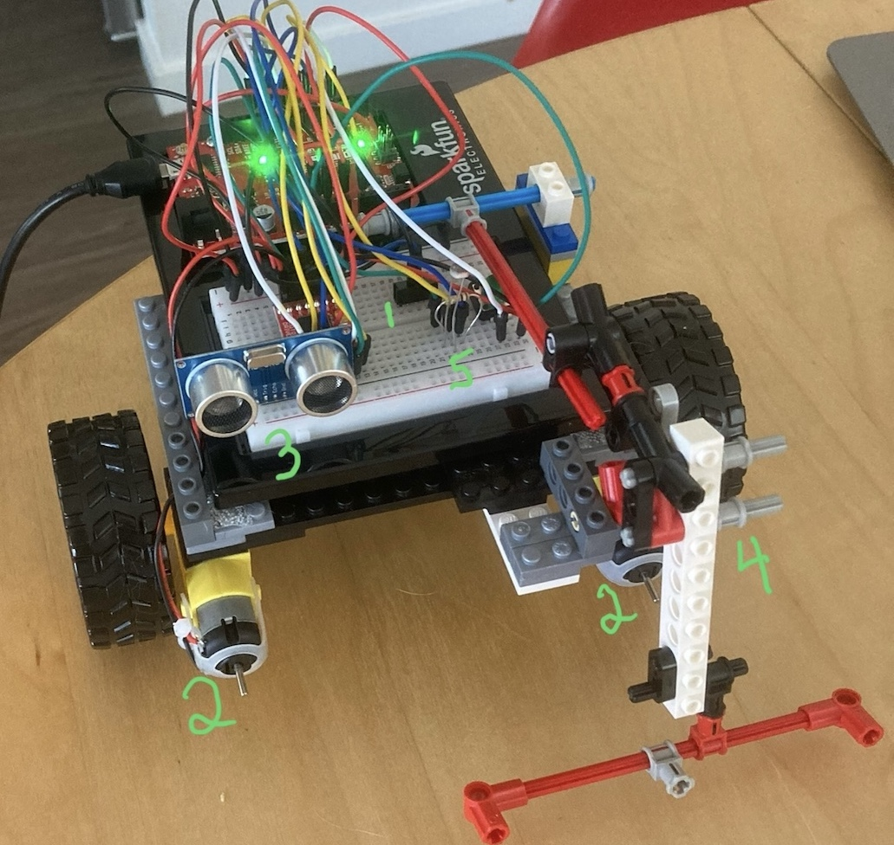

*In Development*: Cloud-based Resource Optimization System (2026)
.NET | C# | xUnit | PostGreSQL | AWS
Currently developing a cloud-based resource optimization system.
This project is inspired by a concept for automated greenhouse management and harvesting robotics,
with a focus on scalable architecture, comprehensive testing suite, and resource management visualization.

Arduino Solar Robot (2024)
Arduino | C++ | Ultrasonic sensor | PhotoResistor
A physical robotics prototype capable of navigation, mapping, and
pathfinding within unknown environments.
Designed for potential agritech crop optimization applications.
A finite state machine simulation of biological ant movement utilizing NPC wandering, A* pathfinding,
and path smoothing behaviours to model autonomous agent movement.
A reinforcement learning demonstration where an AI agent (RED) learns to navigate and
adapt through repeated maze trials before competing against the player (BLUE) through the obstacle course.
Includes adaptive learning for breakable barrier (brown square) interactions.